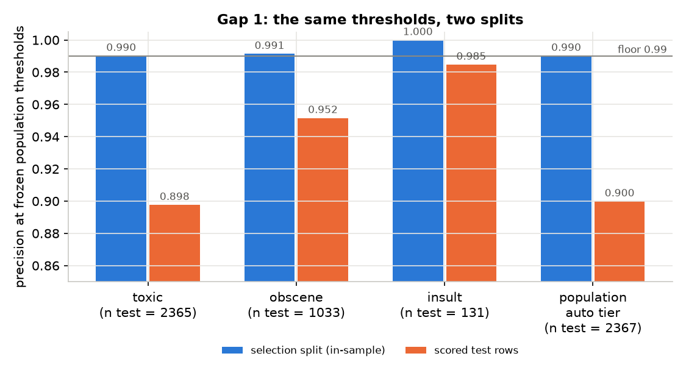
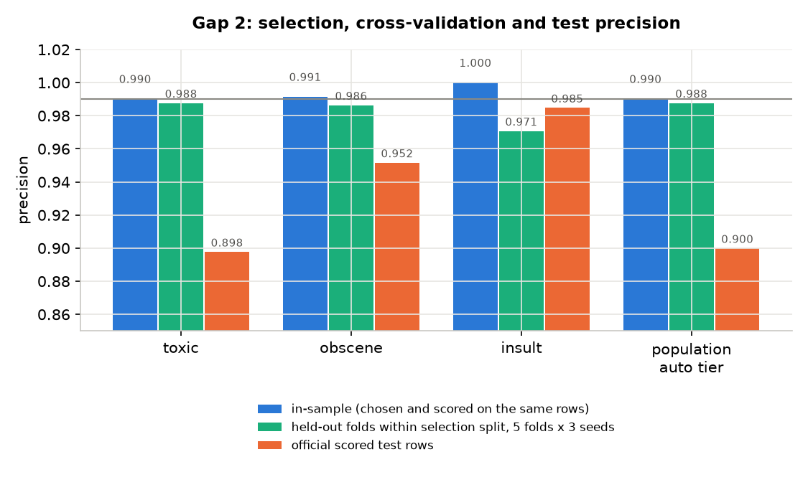
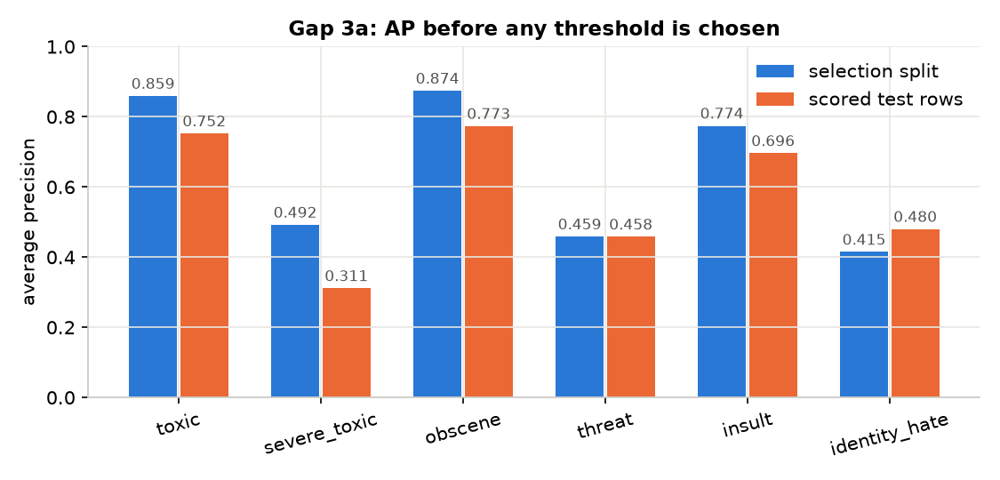
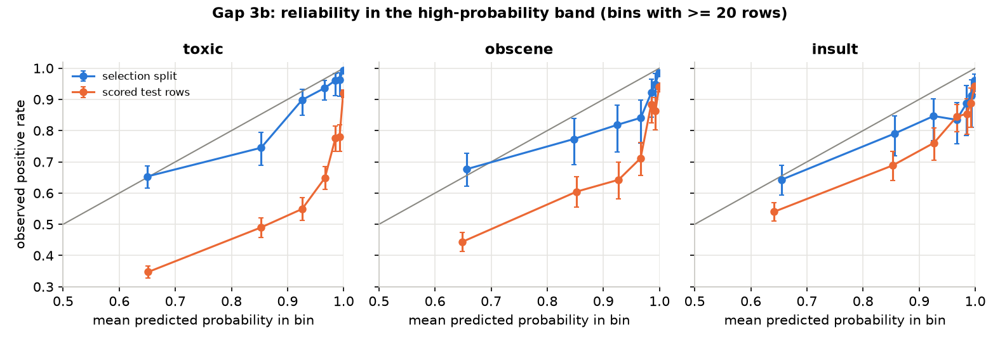
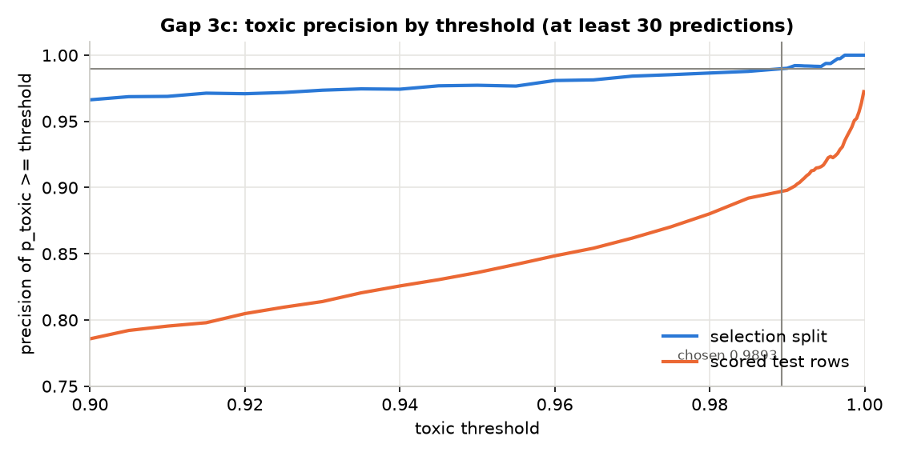
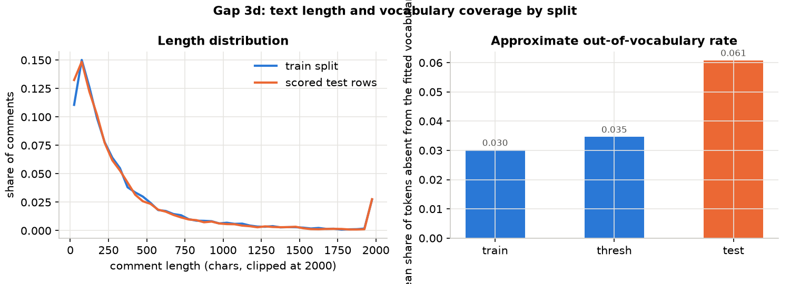
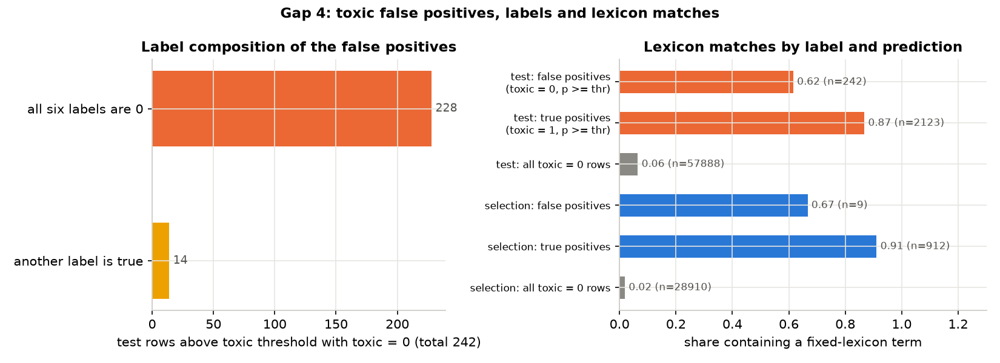
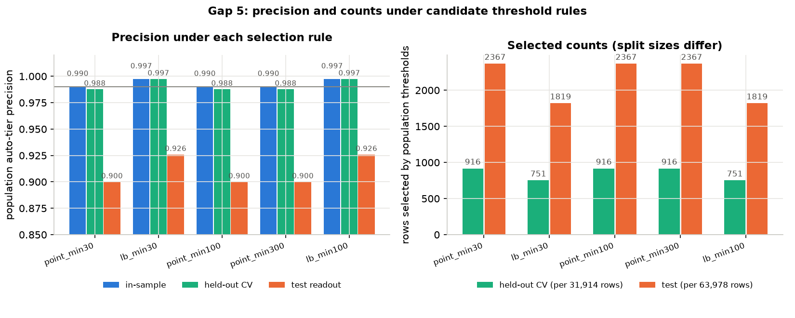
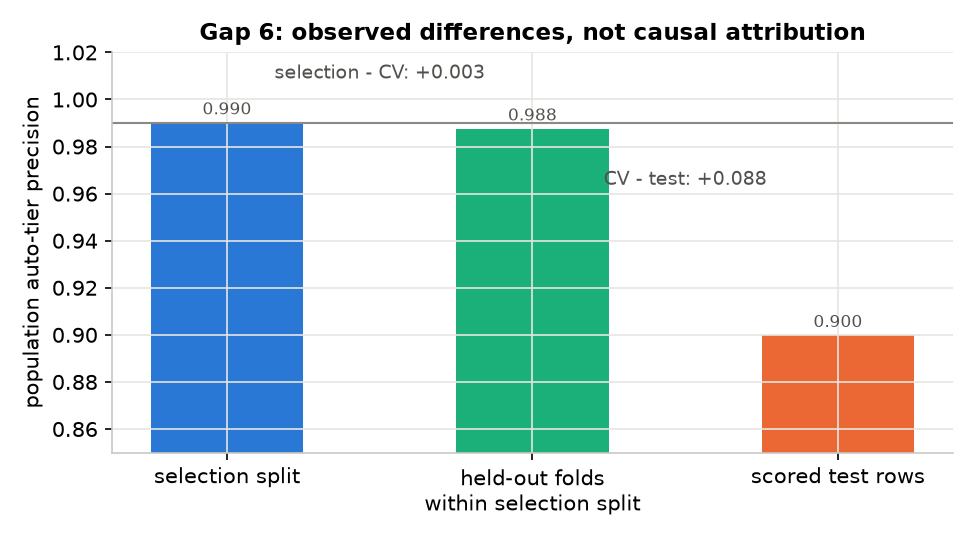

首轮结果与诊断
本页保留原自动处置实验及其 99% 目标。当前方案已改为优先人工审核，见第三步。历史结果不按新标准重判。
本轮完成了真实数据评估，移除 R103，并检查自动处置精确率的缺口。先列最终路由结果，再比较策略改动，最后讨论诊断能支持哪些判断。
1. 数据
数据来自 Hugging Face 镜像 thesofakillers/jigsaw-toxic-comment-classification-challenge，保存在 data/jigsaw/，不提交语料文件。train 共 159,571 行，评分测试行共 63,978 行；行数和标签计数与项目记录的基准计数一致。manifest 保存三个文件的 SHA-256，便于检查是否使用同一份输入。
最终运行 20260922T112845423138Z-baseline，commit 3429f1fe4170，工作区干净。下文中的政策要求来自该运行保存的快照。测试行未参与本次模型拟合，但已用于多轮诊断，不再是后续改进的全新盲测数据。
2. R1 结果
最终路由结果
| 层级 | n | 覆盖率 | 测试集精确率 | 95% 区间 | 选择集精确率 |
|---|---|---|---|---|---|
| auto_action | 2125 | 0.033 | 0.904 | [0.891, 0.916] | 0.9917 |
| human_review | 4185 | 0.065 | 0.551 | [0.536, 0.566] | 0.8901 |
| allow | 57668 | 0.901 | n/a | n/a |
自动处置的测试集精确率为 0.904，选择集为 0.9917；人工审核层分别为 0.551 和 0.8901。第 5 节检查这类跨数据集差距。人工审核的 0.90 是逐标签选阈值时的目标，不是合并标签、移除自动处置、应用规则后的队列保证。
逐标签结果与指标说明
AP 是平均精确率，描述整条精确率与召回率曲线；P 为精确率，R 为召回率。下表 P/R 均在测试集测量，使用总体阈值，尚未加入子组限制和规则。n/a 表示没有合格阈值。
| 标签 | 阳性 | AP 选择集 | AP 测试集 | ROC-AUC | 人工阈值 | P@人工 | R@人工 | 自动阈值 | P@自动 | R@自动 |
|---|---|---|---|---|---|---|---|---|---|---|
| toxic | 6090 | 0.859 | 0.752 | 0.957 | 0.6576 | 0.663 | 0.680 | 0.9893 | 0.898 | 0.349 |
| severe_toxic | 367 | 0.492 | 0.311 | 0.982 | n/a | n/a | n/a | n/a | n/a | n/a |
| obscene | 3691 | 0.874 | 0.773 | 0.972 | 0.6573 | 0.773 | 0.616 | 0.9984 | 0.952 | 0.266 |
| threat | 211 | 0.459 | 0.458 | 0.992 | n/a | n/a | n/a | n/a | n/a | n/a |
| insult | 3427 | 0.774 | 0.696 | 0.965 | 0.9176 | 0.879 | 0.290 | 0.9998 | 0.985 | 0.038 |
| identity_hate | 712 | 0.415 | 0.480 | 0.974 | n/a | n/a | n/a | n/a | n/a | n/a |
severe_toxic、threat、identity_hate 在选择集上没有同时满足精确率目标与至少 30 条条件的阈值，因此不能凭自身阈值触发路由。含这些标签的评论仍可能通过其他重叠标签或政策规则进入人工队列。
队列仿真
4 名审核员，每条 2 分钟，持续 8 小时，容量 120 条/小时。从 4185 条人工审核候选评论中有放回抽样，按泊松过程到达。候选池含 429 条高危评论，高危按真实标签的最大严重度权重 ≥ 5 定义。
表格为 5 个种子的均值 ± 标准差，同一种子下三种排序共用到达时间与处理时长。等待时间只统计仿真结束前已完成的评论，单位为分钟；p90 表示其中 90% 的等待不超过该值。高危剩余包含正在处理的任务，结束积压只计尚未开始的任务。
| 负载/h | 顺序 | 处理 | 高危处理 | 高危剩余 | 危害/人时 | 高危等待 p50 | 高危等待 p90 | 结束积压 |
|---|---|---|---|---|---|---|---|---|
| 60 | fifo | 468 ± 26 | 42.6 ± 5.9 | 0.0 ± 0.0 | 21.1 ± 1.3 | 0.0 ± 0.0 | 0.4 ± 0.2 | 0 ± 1 |
| 60 | prob | 468 ± 26 | 42.6 ± 5.9 | 0.0 ± 0.0 | 21.1 ± 1.3 | 0.0 ± 0.0 | 0.3 ± 0.2 | 0 ± 1 |
| 60 | severity | 468 ± 26 | 42.6 ± 5.9 | 0.0 ± 0.0 | 21.1 ± 1.3 | 0.0 ± 0.0 | 0.3 ± 0.2 | 0 ± 1 |
| 108 | fifo | 867 ± 20 | 88.2 ± 4.6 | 0.8 ± 0.7 | 39.7 ± 1.3 | 1.5 ± 0.9 | 6.2 ± 2.8 | 1 ± 2 |
| 108 | prob | 867 ± 20 | 88.2 ± 4.6 | 0.8 ± 0.7 | 39.7 ± 1.3 | 0.3 ± 0.1 | 1.4 ± 0.2 | 1 ± 2 |
| 108 | severity | 867 ± 20 | 88.0 ± 4.7 | 1.0 ± 1.1 | 39.6 ± 1.3 | 0.3 ± 0.1 | 1.1 ± 0.3 | 1 ± 2 |
| 180 | fifo | 953 ± 4 | 100.0 ± 3.8 | 47.6 ± 6.4 | 44.6 ± 0.9 | 81.8 ± 5.4 | 143.3 ± 9.3 | 465 ± 41 |
| 180 | prob | 953 ± 4 | 124.6 ± 3.1 | 23.0 ± 5.9 | 53.1 ± 1.0 | 0.5 ± 0.2 | 3.1 ± 1.4 | 465 ± 41 |
| 180 | severity | 953 ± 4 | 133.8 ± 5.3 | 13.8 ± 2.3 | 56.0 ± 1.3 | 0.5 ± 0.2 | 2.2 ± 1.1 | 465 ± 41 |
在 108 条/小时时，严重度排序的高危等待 p90 为 1.1 分钟，FIFO 为 6.2 分钟。此时队列结束仍有少量未完成任务，不能称为全部清空。
在超容量的 180 条/小时时，各策略完成数量相同，但处理对象不同。严重度排序每审核人时处理的危害代理值为 FIFO 的 1.26 倍，剩余高危任务为 13.8 条，FIFO 为 47.6 条。
与概率排序相比，严重度排序在 180 条/小时的 5/5 个种子中处理了更多高危任务，平均多 9.2 条。在 108 条/小时的 5/5 个种子中，其高危等待 p90 更短。
这些结果支持本次仿真条件下的排序收益。排序与评价使用同一套严重度权重，结论依赖这套权重和到达假设，尚不能推断真实业务中的伤害减少。
3. R103 的处理
R103 会把含身份词、最大预测概率低于 0.95 的评论转人工。下表比较启用规则、移除规则、再加入子组阈值三种配置。前两次运行来自有未提交改动的工作区；最终运行对应干净提交。各次运行信息保存在 runs.json。
| 状态 | 运行 | 人工 n | 人工精确率 | 自动 n | 自动精确率 | 危害/人时 严重度÷FIFO @180 | 高危等待 p90 严重度 / FIFO @108 |
|---|---|---|---|---|---|---|---|
| R103 生效 | 20260922T100649877069Z | 8200 | 0.301 | 2221 | 0.898 | 1.44 | 1.1 / 5.6 |
| R103 去掉 | 20260922T101035330306Z | 4089 | 0.545 | 2221 | 0.898 | 1.25 | 1.3 / 6.1 |
| R103 去掉 + 子组阈值（最终） | 20260922T112845423138Z | 4185 | 0.551 | 2125 | 0.904 | 1.26 | 1.1 / 6.2 |
移除原因
本次总体自动处置阈值为 toxic 0.9893、obscene 0.9984、insult 0.9998，均高于 0.95。因此，R103 在这组阈值下无法拦截自动处置，却会把原来应放行的评论送进人工队列。
选择集上有 1,825 条含身份词评论因此进入正向路由，其中 1,670 条没有任何阳性标签。后一个数字根据最终运行中恢复放行的 1,825 条评论及其中 155 条阳性计算。
启用 R103 的测试运行中，R103 匹配 4,467 行。该次运行所有规则合计把 4,129 条放行评论转人工，其中 247 条有阳性标签；人工队列精确率为 0.301。
不同策略改变了人工候选池，仿真又对各候选池设定相同的队列到达率。因此，表中 1.44 与 1.26 的收益比只能分别解释各自池内的排序效果，不能直接表示端到端政策收益。
替换为子组阈值
一种选择是把所有含身份词的自动处置一律改为人工。当前采用更细的限制：在含身份词的选择集子组内，逐标签寻找满足相同精确率目标与样本数要求的阈值，且不得低于总体阈值。找不到时，该标签在子组内不能触发自动处置。这是样本上的筛选条件，不是统计认证。
当前阈值为：toxic 0.9974；obscene 未找到合格阈值，在该子组内不能触发自动处置；insult 未找到合格阈值，在该子组内不能触发自动处置。这项限制从选择集的 921 条总体自动处置中移除了 31 条；从测试集的 2367 条中移除了 97 条，其中 77 条有至少一个阳性标签。
FDR 与 FPR 分别说明什么
身份词来自运行保存的 63 个整词匹配词条。这是文本分组的代理，不是作者身份标注。FDR 的分母是被标记的评论；FPR 的分母是所有实际正常的评论。
| 人工审核指标 | 含身份词 | 不含身份词 | 问题 |
|---|---|---|---|
| FDR，错误发现率 | 43.1% | 45.2% | 进入队列的评论中，多少没有阳性标签？ |
| FPR，假阳性率 | 6.3% | 3.0% | 所有没有阳性标签的评论中，多少进入队列？ |
两组人工队列的 FDR 接近，但正常评论进入人工队列的比例仍相差 2.08 倍。因此，FDR 检查通过不能解释为两组误报风险相同。
自动处置的 FDR 比在总体阈值下为 1.10，95% 区间 [0.78, 1.54]；子组阈值后为 0.58，区间 [0.34, 1.01]。自动处置按触发标签判断正误，FPR 则只统计所有标签均为 0 的正常评论，两者的错误数量也可能不同。
4. 门槛
回归门槛以首轮实测值为参照，用来发现后续退步，不能作为独立的效果证明。政策快照保存了各门槛的来源。自动处置 0.99、利用率 0.60、层级违例上限和 FDR 比上限等预设要求不随本次结果降低。
FDR 比的完整 95% 区间都不高于 1.25 才通过；整个区间高于它则失败，跨越它则标为不确定并跳过。样本不足也跳过。通过只表示满足这项诊断要求。
| 门槛 | 实测 | 要求 | 状态 |
|---|---|---|---|
| AP toxic | 0.752 | ≥ 0.732 | 绿 |
| AP obscene | 0.773 | ≥ 0.753 | 绿 |
| AP insult | 0.696 | ≥ 0.676 | 绿 |
| AP identity_hate | 0.480 | ≥ 0.46 | 绿 |
| AP severe_toxic | 0.311 | ≥ 0.291 | 绿 |
| AP threat | 0.458 | ≥ 0.437 | 绿 |
| auto_action 精确率 | 0.904 | ≥ 0.99 | 红 |
| human_review 精确率 | 0.551 | ≥ 0.52 | 绿 |
| 危害/人时 严重度÷FIFO @ 180/h | 1.255 | ≥ 1.12 | 绿 |
| 高危等待 p90 严重度÷FIFO @ 108/h | 0.174 | ≤ 0.55 | 绿 |
| 队列深度 p95 @ 108/h | 14.220 | ≤ 39 | 绿 |
| 审核员利用率 @ 108/h | 0.905 | ≥ 0.6 | 绿 |
| 层级一致性违反率 | 0.000 | ≤ 0.005 | 绿 |
| 身份词 FDR 比，最终路由汇总 | 1.024，95% 区间 [0.92, 1.14] | 区间上界 ≤ 1.25 | 绿 |
| 身份词 FDR 比，子组阈值之后、规则之前的自动处置 | 0.585，95% 区间 [0.34, 1.01] | 区间上界 ≤ 1.25 | 绿 |
本次已配置的检查中，自动处置精确率未通过。99% 要求保持不变；以下分析用于提出下一轮需要验证的改动。
5. 未达标的诊断
这一节先检查阈值选择的稳定性，再比较选择集与测试集的预测、文本和标签统计。分析只重新选择阈值，模型与校准器保持冻结；它不能把差距精确分解为某几个原因。
5.1 固定阈值复核
将选择集上得到的总体阈值原样用于测试集，先确认差距出现在哪里。
| 标签 | 阈值 | 选择集 n | 选择集精确率 | 测试集 n | 测试集精确率 | 测试集 95% 区间 |
|---|---|---|---|---|---|---|
| toxic | 0.9893 | 921 | 0.990 | 2365 | 0.898 | [0.885, 0.909] |
| obscene | 0.9984 | 467 | 0.991 | 1033 | 0.952 | [0.937, 0.963] |
| insult | 0.9998 | 51 | 1.000 | 131 | 0.985 | [0.946, 0.996] |
| 自动处置层 | 921 | 0.990 | 2367 | 0.900 | [0.887, 0.911] |

5.2 选择集内部验证
将选择集随机分为 5 折，每次在 4 折选择阈值，在剩余一折测量精确率，再合并留出预测。共使用 3 个划分种子；这些种子重复使用同一批数据，不是三份独立样本。
| 标签 | 全选择集拟合并评估 | 留出折 | 每个种子留出预测数均值 | 官方测试集 | 各折阈值范围 |
|---|---|---|---|---|---|
| toxic | 0.990 | 0.988 | 915 | 0.898 | 0.9770 到 0.9944 |
| obscene | 0.991 | 0.986 | 510 | 0.952 | 0.9907 到 0.9986 |
| insult | 1.000 | 0.971 | 64 | 0.985 | 0.9986 到 0.9998 |
| 自动处置层 | 0.990 | 0.988 | 916 | 0.900 | 每个种子：0.989, 0.988, 0.986 |

留出验证能检查选择集内部的稳定性，但各折使用更少的数据、不同的阈值。样本内与留出折的差不能完全归为阈值选择的乐观偏差，剩余差距也不能直接归为分布漂移。
insult 的留出预测平均只有 64 条，每折为 6 到 29 条。其精确率估计对少量错误很敏感；至少 30 条的条件不能替代不确定性评估。
5.3 两份数据的差异
以下检查使用冻结的模型分数。它们能描述差异，还不能确定差异来自文本、标注还是模型。
a. 排序质量

AP 不依赖某个单独阈值。这说明需要同时检查模型排序质量，不能只检查阈值选得是否合适。
b. 概率校准

toxic 各概率档的样本量与实际阳性比例
| 预测概率档 | 选择集 n | 选择集阳性比例 | 测试集 n | 测试集阳性比例 | 测试集 95% 区间 |
|---|---|---|---|---|---|
| [0.5, 0.8) | 686 | 0.653 | 2461 | 0.347 | [0.329, 0.366] |
| [0.8, 0.9) | 259 | 0.745 | 968 | 0.490 | [0.458, 0.521] |
| [0.9, 0.95) | 207 | 0.899 | 712 | 0.549 | [0.512, 0.585] |
| [0.95, 0.98) | 237 | 0.937 | 646 | 0.649 | [0.611, 0.684] |
| [0.98, 0.99) | 129 | 0.961 | 399 | 0.777 | [0.734, 0.815] |
| [0.99, 0.995) | 109 | 0.963 | 358 | 0.779 | [0.734, 0.819] |
| [0.995, 1] | 801 | 0.994 | 1965 | 0.920 | [0.907, 0.931] |
在最高概率档，选择集实际阳性比例为 0.994，测试集为 0.920。同一概率映射在测试行上表现较差，但这个差异本身不能识别原因。
c. 当前 toxic 分数的阈值范围

这次事后扫描说明：当前冻结的 toxic 模型，仅调整单一分数阈值，未在这些测试行上达到 0.99。它不限制其他模型、特征或路由方法的可达性能。扫描使用了测试标签，因此不能把这个最大值当作新方法的独立验证结果。
d. 文本与词表覆盖
| 数据 | 抽样行数 | 字符数中位 | 字符数 p90 | 每条评论词表外比例均值 | 词表外比例 p90 | 无词表内 token 的评论比例 |
|---|---|---|---|---|---|---|
| 训练集 | 15,000 | 207 | 901 | 0.030 | 0.086 | 0.000 |
| 选择集 | 15,000 | 202 | 881 | 0.035 | 0.095 | 0.000 |
| 测试集 | 15,000 | 197 | 852 | 0.061 | 0.142 | 0.012 |

这里的词表外比例是近似诊断，分词时未完全复用模型的重音符号归一化。它描述文本覆盖差异，不能直接量化这种差异造成了多少误判。
5.4 假阳性样本检查
取 toxic 预测概率 ≥ 0.9893、但 toxic 标签为 0 的 242 条测试评论。其中 14 条有其他阳性标签，228 条的六个标签均为 0。以下检查以数据集标签为评估依据，并未人工重标。
使用 35 个词的辱骂词表做整词匹配，比较假阳性、真阳性和全部阴性评论。词表无法区分辱骂、引用或讨论词语本身，部分词也有多种含义，所以匹配不等于评论应被标为 toxic。
| 集合 | n | 匹配词表 | 比例 | 95% 区间 |
|---|---|---|---|---|
| 测试集：假阳性（toxic=0，p ≥ 阈值） | 242 | 149 | 0.62 | [0.55, 0.67] |
| 测试集：真阳性（toxic=1，p ≥ 阈值） | 2123 | 1842 | 0.87 | [0.85, 0.88] |
| 测试集：全部 toxic=0 行 | 57888 | 3756 | 0.06 | [0.06, 0.07] |
| 选择集：假阳性 | 9 | 6 | 0.67 | [0.35, 0.88] |
| 选择集：真阳性 | 912 | 831 | 0.91 | [0.89, 0.93] |
| 选择集：全部 toxic=0 行 | 28910 | 554 | 0.02 | [0.02, 0.02] |

查看 12 条抽样原文，含辱骂内容
按是否匹配词表分层抽样，种子为 11。其中 7 条匹配、5 条不匹配；每条只显示前 240 个字符，片段可能缺少上下文。
p=1.0000不含词表词；六个标签全为 0== Gay naturism ==
p=1.0000不含词表词；六个标签全为 0you madyou madyou madyou madyou madyou madyou madyou madyou madyou madyou madz9
p=0.9998不含词表词；六个标签全为 0SHUT UP
p=0.9997含词表词；六个标签全为 0== I suck! == I suck! - Tim McFailland
p=0.9977含词表词；六个标签全为 0Then you stop messing around with my pag4e. I like the Civil War, and I don't want you and your stupid puffins on my page!
p=0.9961含词表词；六个标签全为 0== BLOCKING WIKIPEDIA == A METHOD FOR BLOCKING WIKIPEDIA FROM POLLUTING SEARCH RESULTS WITH ITS USELESS, INACCURATE, AND COMPLETELY GARBAGE BULLSHIT WOULD BE A GOD SEND TO THE ENTIRE INTERNET. SO TELL JIMMY WALES TO FUCK RIGHT OFF
p=0.9944不含词表词；六个标签全为 0it is sooooo gay
p=0.9941含词表词；六个标签全为 0Cool story bro'. What the fuck does it have to do with anything?
p=0.9936不含词表词；六个标签全为 0Why are you people SO lame? This is why Wikipedia isn't allowed as a legitimate academic source, and while people like me will NEVER contribute to it. You are just a bunch of limp computer dicks trolling around this site hassling people tha
p=0.9924含词表词；六个标签全为 0" == Simcoe == *You live in Simcoe, Ontario, right? That article (and many others) WAS basically controlled by a mentally disabled person. *http://www.simcoereformer.ca/2010/01/26/letters-to-the-editor-5 - He own says: ""As a mental
p=0.9913含词表词；六个标签全为 0" Eric, I get told to ""fuck off"" from time to time in support / retail roles, and I know elderly patients suffering from dementia in care homes tell the nurses to ""go fuck themselves"" with optional racial and sexist slurs thrown in.
p=0.9902含词表词；六个标签全为 0Why do you have a page, I've never fucking heard of you
在所有匹配词表的评论中，选择集有 1714 / 2268 被标为 toxic，比例 0.76；测试集为 3855 / 7611，比例 0.51。两组匹配了同一词表，但评论内容和语境并不相同，不能仅据此认定测试标注更宽松。
其余 93 条未匹配词表的假阳性也未逐条判定。它们的近似词表外比例为 0.150，高于匹配词表的假阳性 0.080 和真阳性 0.068。这是后续抽样复核的线索，尚不能归因。
诊断词表
fuck, fucking, fucked, shit, bullshit, asshole, assholes, bitch, bitches, cunt, dick, twat, suck, sucks, idiot, idiots, stupid, moron, morons, loser, losers, faggot, fag, nigger, retard, retarded, bastard, crap, pathetic, dumb, jerk, wanker, scum, pig, pigs。
这份额外词表只用于诊断，没有作为单独特征输入模型；其中的词可能与模型学到的 TF-IDF 词表重叠。
5.5 阈值规则对比
比较五种规则，每种都在选择集内做相同的阈值交叉验证，再用全选择集确定阈值并报告测试读数。候选规则按留出折结果比较；由于同一组验证结果也用于选择候选，最好结果还需要新的独立验证。
| 规则 | 样本内精确率 | 留出折精确率 | 留出预测数均值 | 测试精确率 | 测试预测数 | 全选择集阈值 |
|---|---|---|---|---|---|---|
| 点估计 ≥ 0.99，至少 30 条，当前规则 | 0.990 | 0.988 | 916 | 0.900 | 2367 | toxic 0.9893, obscene 0.9984, insult 0.9998 |
| Wilson 下界 ≥ 0.99，至少 30 条 | 0.997 | 0.997 | 751 | 0.926 | 1819 | toxic 0.9965 |
| 点估计 ≥ 0.99，至少 100 条 | 0.990 | 0.988 | 916 | 0.900 | 2367 | toxic 0.9893, obscene 0.9984 |
| 点估计 ≥ 0.99，至少 300 条 | 0.990 | 0.988 | 916 | 0.900 | 2367 | toxic 0.9893, obscene 0.9984 |
| Wilson 下界 ≥ 0.99，至少 100 条 | 0.997 | 0.997 | 751 | 0.926 | 1819 | toxic 0.9965 |

Wilson 区间用于表达比例估计的不确定性。以区间下界选阈值，比只看精确率点估计更保守；但这里扫描了多个候选阈值，单点区间并不是选择后的 95% 保证。
本次两种下界规则 lb_min30 和 lb_min100 的结果相同，均只保留 toxic 的自动处置阈值。按双侧 95% Wilson 区间计算，即使没有错误，下界达到 0.99 也需要至少约 381 条，所以 30 与 100 的最低样本数在本轮均未成为约束。
将点估计规则的最小样本数提高到 100 或 300，会关闭 insult 的自动处置阈值。但它原先触发的评论同时触发其他标签，因此总体自动处置数量在本轮保持不变。
5.6 证据与限制
| 总体阈值的评估方式 | 自动处置精确率 | 描述性差值 |
|---|---|---|
| 全选择集拟合并评估 | 0.990 | 参照值 |
| 选择集留出折均值 | 0.988 | 比样本内低 0.26 个百分点 |
| 官方评分测试行 | 0.900 | 比留出折低 8.78 个百分点 |

- 当前流程在测试集上未达到自动处置要求，这个结论同时出现在最终路由和总体阈值诊断中。
- 更保守的阈值规则在选择集内部验证中表现更好，并减少自动处置数量。它值得进入下一轮比较，尚未解决测试精确率缺口。
- 词表、概率校准和 AP 的差异提供了调查方向。没有统一标准下的人工复核，就不能确认标注差异，更不能量化它对缺口的贡献。
- 当前 toxic 分数的阈值扫描不证明 99% 对其他方法不可达。后续仍需按事先确定的标签标准、目标和覆盖要求评估。
6. 首轮提出的下一步
以下是首轮结束时的计划。其中保留自动处置权限和 99% 要求的决定，已由第三步的人工确认方案替代；其余条目保留为当时提出的验证建议，当前安排见目录和最新一步的决定。
- 把 Wilson 下界规则作为候选，与当前点估计规则在相同协议下比较，同时报告精确率、覆盖数量和关闭的标签。
- 准备新增留出数据，并预先区分模型训练、校准、阈值选择和最终评估的用途。已经反复查看过的官方测试行继续用于诊断，不能切两半后当作从未使用的数据。
- 尝试字符 n-gram 或子词特征，检查它们是否减少当前词级模型的错误。重点比较精确率与覆盖率、AP 和高概率段的校准表现；词表外比例目前只提供尝试的动机。
- 按预先写明的标注标准抽样复核，包括含词和不含词的假阳性，以及必要的对照样本。先量化分歧，再决定是否修订标注或评估口径。
- 保留 99% 自动处置要求，不因本轮未通过而降低。新的方法应在冻结配置、足够样本和明确覆盖率下接受独立评估。
本节数字来自 results.json，运行对照来自 runs.json。测试标签用于事后诊断和阈值范围扫描，但没有用扫描结果替换本轮冻结的路由阈值。以上改进方向都还需要新的验证；原始评估标签在本轮保持不变。